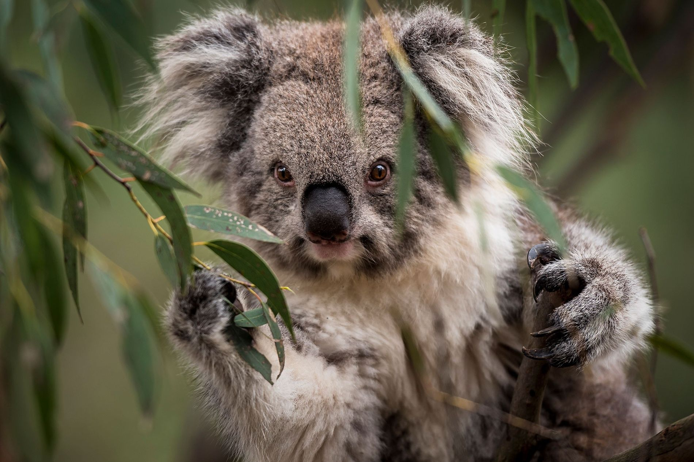
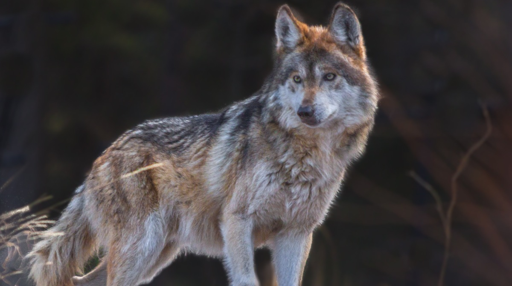

Animales en Lista
- A
Antílope
- Los antílopes son mamiferos ungulados de la familia de los hóvidos
- Fuente: Wikipedia Antílope
- B
Ballena
- Las ballenas son cosideradas como los animales más grandes del mundo

- Fuente: Wikipedia Ballena
- C
Camaleón
- Los camaleones son conocidos por cambiar de color

- Fuente: Wikipedia Camaleón
- D
Delfín
- Los delfines son conocidos por su gran inteligencia

- Fuente: Wikipedia Delfín
- E
Elefante
- Los elefantes son considerados como uno de los animales más inteligentes y grandes del mundo

- Fuente: Wikipedia Elefante
- F
Flamenco
- Los flamencos son conocidos por su color rosa

- Fuente: Wikipedia Flamenco
- G
Ganso
- Los gansos son conocidos por ser muy territoriales

- Fuente: Wikipedia Ganso
- H
Halcón
- Los halcones son conocidos por volar a grandes alturas

- Fuente: Wikipedia Halcón
- I
Iguana
- Las iguanas son conocidas por sus colores llamativos y su cresta

- Fuente: Wikipedia Iguana
- J
Jaguar
- Los jaguares son muy conocidos por su velocidad
- Fuente: Wikipedia Jaguar
- K
Koala
- Los koalas son conocidos por sus largas siestas
- 
- Fuente: Wikipedia Koala
- L
Lobo
- Los lobos son muy conocidos por siempre ir en manada
- 
- Fuente: Wikipedia Lobo